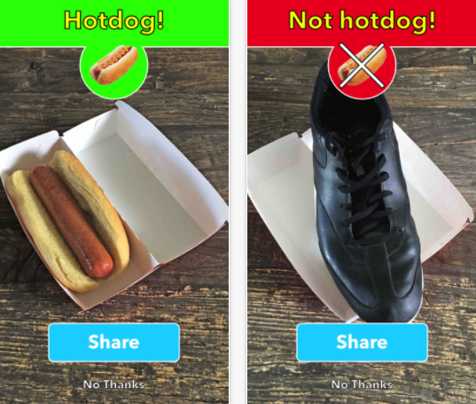

Hello World
CodeTengu Weekly 碼天狗週刊
CodeTengu Weekly 會在 GMT+8 時區的每個禮拜一 AM 10:00 出刊，每期會由三位不同的 curator 負責當期的內容，每個 curator 有各自擅長的領域，如果你在這一期沒有看到自已感興趣的東西，可能下一期就會有了。你也可以瀏覽一下前幾期的內容。
目前的 curator 陣容：
- @vinta - I failed the Turing Test - 科幻迷，最近在讀 Singularity Sky
- @saiday - Imnotyourson - 最近在看禪與摩托車維修的藝術
- @tzangms - Oceanic / 人生海海 - 衝動型購物
- @fukuball - ImFukuball - 有新工作了，但歡迎直接挖角
- @mingderwang - Ethereum enthusiast
- @kako0507 - 熱愛嘗試新事物的前端工程師
- @chiahsien - 在這裡寫歡迎挖角真的有用嗎🤔 有讀者留意過這一區塊嗎 XD
- @hiroshiyui - 歧路亡羊與中年危機的典範
- @uranusjr - Smaller Things - 台灣盲目吹捧 Python 大會熱烈售票中 🐍
- @kkdai - 態度萬歲 - 喜歡 Golang 的略懂工程師，最近在學機器學習 (疑?)
- @yhsiang
- @johnlinvc - 差不多該學個新程式語言了
你也可以關注我們的 Facebook、Twitter、GitHub（Open Source 專案）或微博，有很多 Weekly 看不到的內容。有任何建議或疑問也歡迎來 Gitter 聊聊。
 @fukuball
@fukuball
FMA: A Dataset For Music Analysis
Machine Learning、Data Science、Dataset：中級
FMA 這個 Dataset 大概是 MIR（Music Information Retrieval）領域研究者的一大福音，不僅有處理好的 106,574 首音樂相關資料（音訊特徵、歌曲 meta 等等），居然還提供完整總共 879 GiB 的完整歌曲 mp3 檔給研究者下載作為分析研究之用！
之前我曾經介紹過 iNDIEVOX-Dataset 其實也是希望提供給研究者一個好用的音樂 Dataset，當時就曾經對老闆說過好好整理這些資料說不定之後可以發國際 conference paper，讓台灣的獨立音樂可以以另外一種形式站上國際，果然這個 FMA Dataset 就有發到 MIR 的頂級國際會議 ISMIR ，不過不知會不會被 accept 就是了～
林軒田教授機器學習技法 Machine Learning Techniques 第 11 講學習筆記
Machine Learning：中級
在這一講，我們從 Random Forest 延伸到了 AdaBoost Decision Tree，再從 AdaBoost Decision Tree 延伸到 Gradient Boosting，講了這麼多 Aggregation 形式的機器學習模型，其實我自己也有點昏頭，Aggregation Model 終於要在這一講告一段落了，大家不一定要記住所有演算法的細節，但大致上對 Aggregation 的方式有些概念就可以啦！
如果要記，就要記住這個核心概念：Aggregation Model 可以避免 underfitting，讓 weak learner 結合起來也可以做複雜的預測，其實跟 feature transform 的效果很類似。Aggregation Model 也可以避免 overfitting，因為 Aggregation 會選出比較中庸的結果，這其實跟 regularization 的效果類似。所以使用了 Aggregation 也就是 Ensemble 方法通常也就代表了更好的效果。
有人說 Deep Learning 加上 Drop Out 會表現得更好，其實某種程度也是一種 Aggregation Ensemble 的應用啊。
Building a Neural Network in Python
Machine Learning：初級
之前在 CodeTengu 有分享過 Neural Networks Tutorial – A Pathway to Deep Learning 這篇介紹如何寫出最簡單的 Deep Learning 演算法，今天分享的這篇則是更淺顯的介紹如何寫出類神經網路演算法，範例淺顯易懂，推～
Php vars @ JS with the help of a Laravel SP & View Composer
Laravel：中級
Laravel 多國語言支援的功能算是非常容易使用的了，不過在 JS 前端還是要自己處理，我現在的做法會在 html 的 data attribute 放上 JS 需要用到的文字，這樣就可以做到 JS 前端的多國語言（不知大家都怎麼做？）。這篇文章則寫成了 Service，這樣的做法比我那樣的確高明多了啊！學習了！
Laravel Interview Questions and Answers
Laravel：初級
這個網站 Domain 就是 laravelinterviewquestions，直接明暸，其實整個網站的內容就是大大小小的 Laravel 相關問題 Q&A，我個人覺得蠻適合初學者瀏覽的，不一定是要去面試才需要看這網站內容。
 @kako0507
@kako0507
An Abridged Cartoon Introduction To WebAssembly
本篇文章先透過圖解方式介紹 javaScript 的演進，從最早的 interpreter 實作，到 just-in-time (JIT) 後，詳細說明 WebAssambly 的運作流程，及其優缺點。
Facebook’s Prepack — The Next Killer In The JavaScript Zone
Facebook 近期開源了一套 JavaScript source code 最佳化工具： Prepack ，可以在 Compile 時執行計算，並且透過重新取代 JavaScript bundle 裡的 global code 來提高執行效率，目前還尚在開發階段，建議不要用在正式產品上，可以透過官方 playgroud 來試玩看看。
Getting Started with Headless Chrome
Chrome 59 開始支持 Headless 模式（目前僅支援 Mac 及 Linux ）， Headless 模式可以用於 automated testing 或不需要 visible UI 的 server environments ， 開發者可以透過 command line 指令來完成瀏覽器操作， PhantomJS 的定位將逐漸被取代 。
Introducing Stack Overflow Trends
Stack Overflow 每天累積上千則程式相關的問題，所以透過 Stack Overflow 可以了解不同語言及領域的社群熱度，最近他們也提供了 Stack Overflow Trends 讓開發者可以自行比較各個程式語言的趨勢。
 @johnlinvc
@johnlinvc
Android 開始官方支援 Kotlin 語言
Google I/O 2017 宣布了Android 開始官方支援 Kotlin. Kotlin 是由 JetBrains 主導的開源程式語言，語法和功能相當現代。 Kotlin 有望為 Android 帶來不少新血，就如同 Apple 的 Swift 一般。
Elixircasts
想學 Elixir 和 Phoenix，卻不知從何開始嗎？Elixircasts 提供 Elixir 和 Phoenix 的基礎影片教學，相當適合入門。讓我有點懷念起不再更新的 RailsCast。
MP3 is not dead. Long live the MP3.
最近 MP3 的最後一個專利在美國過期，主要專利持有者 Fraunhofer Society 也停止了專利授權計畫。熱門 Podcast 播放器 Overcast 開發者 Marco Arment 分析了為什麼 MP3 專利到期不但不是 MP3 時代的結束，反而會是一個 MP3 新時代的開始。
Sinatra 2.0
Micro Web Framework 的老前輩 Sinatra 終於出了 2.0 版。最大的改變就是處理 request 分派的 router 換成了 Mustermann, 可以支援各種不同的風格的 URL 比對語法，包含 Flask, Express 等等，當然還有 Sinatra 自己的語法。
不過現在需要 Ruby 2.2 以上才能執行 (最新版是 Ruby 2.4)，嘗試前記得先升級 Ruby。
Firebase 的計費方式調整讓某新創的帳單漲價了 70 倍
Firebase 的新流量計算公式讓 HomeAutomation 的帳單從 25 元美金暴增到 2000 元美金。這個事件也讓大家反思了系統依賴外部服務好與壞。不過後來 Firebase 也提供了 Credit 補償，算是有了個好的結果。
Random Cool Stuff

NotHotdog-Classifier - 如何實作 Silicon Valley 中的 Not Hotdog 分類器
"What would you say if I told you there is a app on the market that tell you if you have a hotdog or not a hotdog. It is very good and I do not want to work on it any more. You can hire someone else." - Jian-Yang , 2017
這是第四季 Silicon Valley 一個幽默的片段， Jian-Yang 發明了 「See Food」App，希望透過 App 辨識食物，但系統只能辨識出「熱狗」及「非熱狗」，於就就變成了一款「Not Hotdog」App，而這個 App 居然還真的可以在 App Store 下載！
這個 Repo 也致敬了這個片段，教大家怎麼用 Keras 寫出一個 Not Hotdog 分類器，大家可以配著精彩片段一起服用～